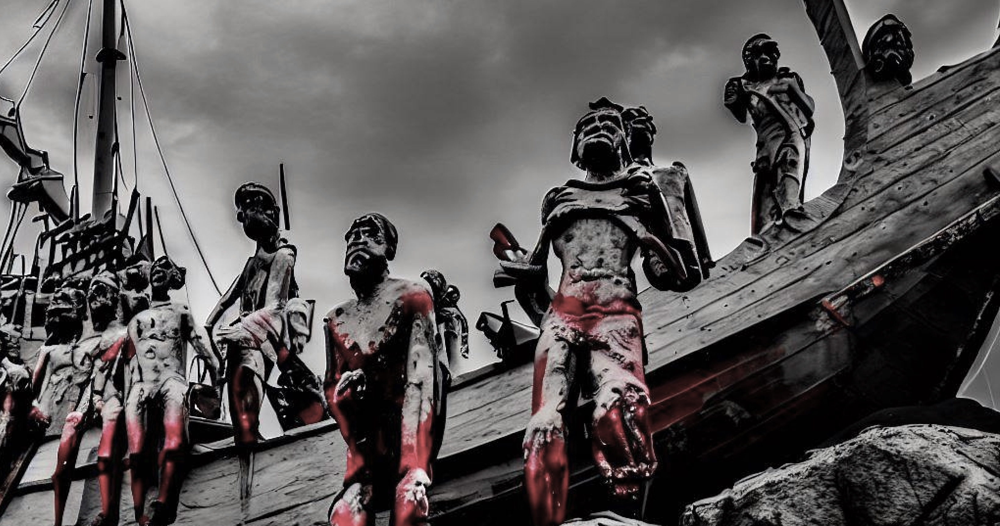

A STORY OF RESILIENCE: THE SURVIVORS OF THE BATAVIA

January 16, 2023
In this blog post, I invite you to delve into the harrowing tale of the Batavia shipwreck—a story of survival against all odds. Through the lens of history, we will explore the lives of the survivors and unravel the extraordinary qualities that enabled them to overcome unimaginable adversity. The Batavia shipwreck stands as one of the most tragic chapters in the history of Australia, but within this tragedy, we find a testament to the indomitable human spirit.
The passengers of the ill-fated Batavia found themselves stranded on the remote Abrolhos Islands, a desolate and unforgiving chain off the Australian coast. For months, they were marooned, cut off from civilization and left to face the harsh realities of survival. However, what awaited them on those islands was far from the anticipated camaraderie and unity in the face of adversity. Instead, they were thrust into a battle for survival against their own fellow survivors.
The extraordinary tale of the Batavia survivors unfolds against a backdrop of treachery, violence, and betrayal. Amidst the isolation and desperation, a power struggle ensued, pitting individuals against one another as they vied for limited resources and control over their bleak surroundings. Yet, amidst this darkness, the survivors demonstrated remarkable resilience and resourcefulness, showcasing the very depths of the human spirit.
Forming alliances became a crucial means of survival. The survivors recognized that unity was their best chance for enduring the harsh conditions and navigating the treacherous dynamics that emerged within the group. Bonds were forged, and trust was established among those who understood that collaboration was the key to their collective survival. It was in these alliances that the seeds of hope were sown, as the survivors found solace and strength in their shared struggles.
Resourcefulness was another quality that emerged from the survivors' fight for survival. With limited provisions and facing the constant threat of hunger and exposure, they had to rely on their ingenuity and adaptability to sustain themselves. They discovered ways to source food and water, utilizing the limited resources available to them. From fishing to foraging, they honed their skills and tapped into their collective knowledge to overcome the challenges presented by their desolate environment.
Adaptability became paramount in the face of the ever-changing circumstances. The survivors learned to navigate the shifting dynamics within the group, which often posed greater dangers than the elements themselves. They had to decipher the intentions of their fellow survivors, distinguishing between friend and foe, and making calculated decisions to protect themselves and their allies. It was a constant test of their ability to read human nature, adapt to unforeseen circumstances, and make difficult choices to ensure their own survival.